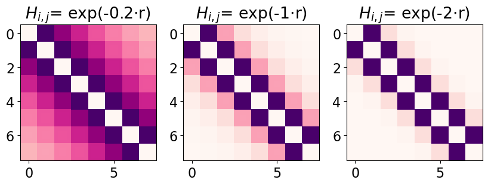

## Weekly Update ----- ### Last Week(s) 1. Found some interesting density-dependent behaviour, so this may be a new side project 2. Had a 2.5 hour chat about calculating connectivity and dimension of weighted graphs 3. Had a catch up chat with some 1st year PhDs about a potential event 4. Debugged all the bath spectral functions for my main project 5. Organised this week's theory coffee speaker ----- ### Main Result <section> </img> </section> --- #### Measures of system dimension/connectivity Most promising is the weighted connectivity measures $s_i = \sum_{j=1}^N a_{ij} w_{ij}$ $$k^w_{nn,i} = \frac{1}{s_i} \sum_{j=1}^N a_{ij}w_{ij}k_j$$ Though looking at the spectral dimension may also be helpful: $K(t) = \text{tr}e^{-Ht} = \sum_\lambda e^{-\lambda t}$ ----- ### This Week 0. Work on manuscript comments 1. Generate more finite temperature data for the main project 2. Finally move things across to the clusters 3. Try to have less hayfever so I can focus on the paper comments more 4. Double check which virtual conferences I may want to go to in the coming months 5. Think about how to code up the analysis for the side project